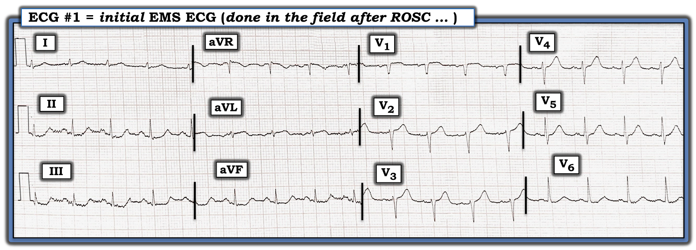
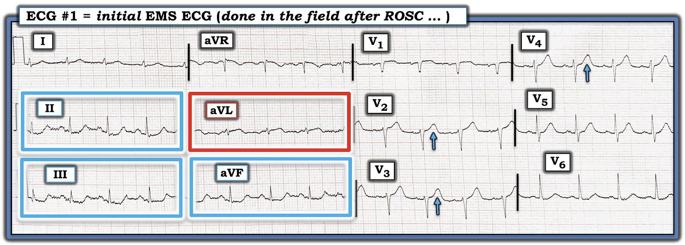
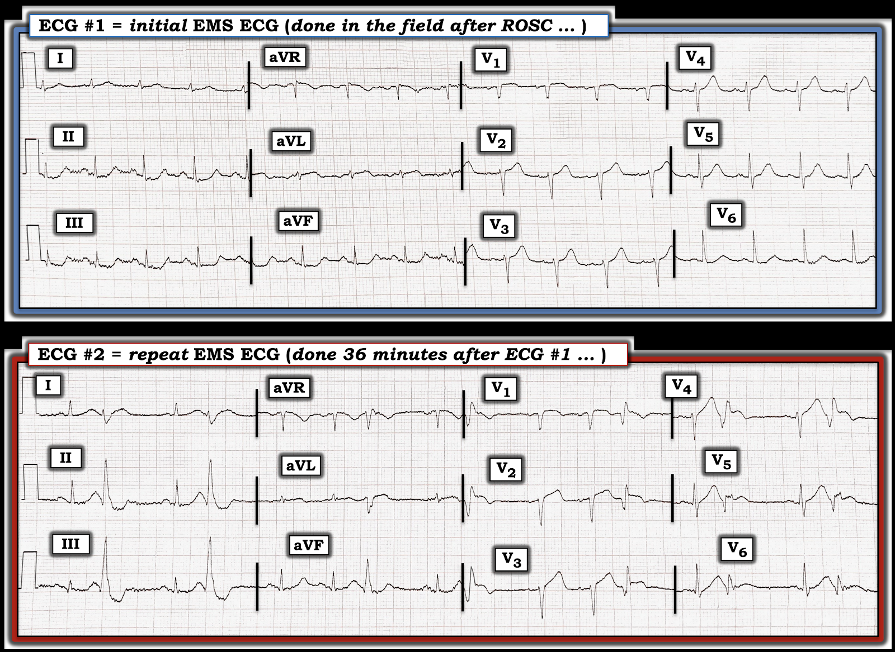
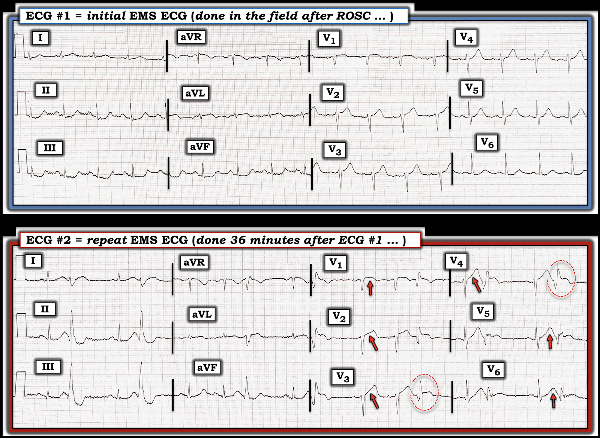

ECG Blog #440 — "Manh mối từ PVC" là gì?
Bệnh nhân trong ca hôm nay là một người đàn ông lớn tuổi gọi đội cấp cứu ngoài viện (EMS) vì mới đau ngực – CP (Chest Pain) — rồi bị ngừng tim có người chứng kiến ngay khi nhân viên cấp cứu vừa tới hiện trường. Bệnh nhân được hồi sức thành công, và điện tâm đồ (trình bày ở Hình 1) ban đầu của ông — được truyền về cơ sở gần nhất có khả năng thông tim.
Các bác sĩ điều trị (kể cả bác sĩ tim mạch trực) từ chối kích hoạt phòng thông tim (cath lab) dựa trên điện tâm đồ #1 — với lý do: "Không có bằng chứng STEMI cấp, do đó không cần thông tim sớm để làm PCI".
CÂU HỎI:
- BẠN có đồng ý với cách diễn giải điện tâm đồ #1 nêu trên không?
- Lẽ ra có nên kích hoạt phòng thông tim ngay lập tức không?


Có cần thông tim sớm và PCI sau ngừng tim?
Vì câu hỏi về sự cần thiết của thông tim sớm để làm PCI sau ngừng tim ngoài bệnh viện – OHCA (Out-of-Hospital Cardiac Arrest) được hồi sức thành công được đặt ra rất thường xuyên — tôi xin chép lại những bình luận ban đầu của tôi từ ECG Blog #434:
- Có nhiều cách tiếp cận khác nhau trong việc quyết định bệnh nhân nào có tái lập tuần hoàn tự nhiên – ROSC (Return Of Spontaneous Circulation) sau OHCA cần được thông tim sớm. Điều có vẻ đã rõ — là điện tâm đồ sau ROSC giúp nhận diện những bệnh nhân có nguy cơ cao nhất, và do đó có thể hưởng lợi từ tái tưới máu mạch vành (Gentile và cs. — JAHA 12:3027923, 2023 — và — Baldi và cs. — JAMA Netw Open 4(1): e2032875, 2021).
- Thông tim sớm được khuyến cáo nếu điện tâm đồ sau ROSC cho thấy STEMI cấp.
- Quyết định có thông tim hay không ở những bệnh nhân có điện tâm đồ sau ROSC kém rõ ràng hơn thì chưa rõ ràng bằng. Chờ thêm vài phút để ghi lại điện tâm đồ ở những bệnh nhân này có thể giúp giảm kết quả dương tính giả khi bản ghi ban đầu sau ROSC có các dấu hiệu không rõ ràng.
- — "Ý KIẾN CỦA TÔI" — Theo lẽ thường, dù không đạt tiêu chuẩn STEMI tính theo milimét — NẾU có các tiêu chuẩn điện tâm đồ khác cho thấy tắc cấp động mạch vành là nguyên nhân gây OHCA — thì thông tim sớm không chỉ hợp lý, mà còn nên được khuyến cáo.
==============================
Điện tâm đồ sau ROSC trong ca hôm nay:
Điện tâm đồ ban đầu sau ROSC trong ca hôm nay rõ ràng là bất thường. Tôi đã đánh dấu các dấu hiệu MẤU CHỐT trong Hình 2.
- Dù có nhiễu đường nền đáng kể ở các chuyển đạo chi của điện tâm đồ #1 — nhịp nền là nhịp xoang — thể hiện qua sóng P dương với khoảng PR hằng định và bình thường ở chuyển đạo II. Nhịp đều, tần số ~100/phút ( = nhịp nhanh xoang).
- QTc có vẻ hơi kéo dài (dù khó đánh giá hơn do tần số tim nhanh). Trục mặt phẳng trán bình thường (+70 độ). Không có lớn buồng tim.
Về
Thay đổi Q-R-S-T:
- Có sóng Q rất nhỏ ở các chuyển đạo III và aVF — điều này không nhất thiết là bất thường khi trục thẳng đứng.
- Tăng tiến sóng R hơi chậm — với vùng chuyển tiếp (nơi sóng R trở nên cao hơn độ sâu của sóng S) chỉ xuất hiện giữa chuyển đạo V4 và V5. Tuy vậy, vẫn có một sóng dương khởi đầu rõ ràng (sóng r) ở các chuyển đạo V2 và V3, với kích thước tăng nhẹ ở chuyển đạo V4 — nên ý nghĩa của dấu hiệu này còn chưa chắc chắn nếu chỉ dựa trên một điện tâm đồ này.


MẤU CHỐT để đánh giá điện tâm đồ #1 nằm ở Sóng ST-T:
- Các dấu hiệu nổi bật nhất nằm ở chuyển đạo aVL (trong khung chữ nhật ĐỎ ở Hình 2) — nơi có ST chênh lên dạng vòm với đoạn khởi đầu ST bị thẳng đuỗn, tiếp theo là sóng T đảo ngược ở phần cuối.
- ĐIỂM THEN CHỐT (PEARL) #1: Vì phức bộ QRS ở chuyển đạo aVL nhỏ — phải thừa nhận các bất thường ST-T nêu trên là kín đáo. Tuy vậy — chiều cao của sóng T tối cấp ở chuyển đạo aVL bằng chiều cao sóng r ở chuyển đạo này — và không thể phủ nhận sóng T đảo ngược phần cuối kín đáo nhưng có thật ở aVL, điều không bao giờ bình thường khi theo sau một sóng T tối cấp.
- ĐIỂM THEN CHỐT (PEARL) #2: Mọi nghi ngờ về tính xác thực của hình ảnh ST-T ở chuyển đạo aVL cần được giải tỏa ngay khi thấy đoạn ST thẳng đuỗn bất thường và chênh xuống ở từng chuyển đạo thành dưới (trong các khung chữ nhật XANH). Với phần cuối sóng T dương ở các chuyển đạo II,III,aVF — các chuyển đạo thành dưới này biểu hiện hình ảnh soi gương đối nghịch với đoạn ST chênh lên kèm phần cuối âm thấy ở chuyển đạo aVL ( = thay đổi soi gương (reciprocal)) thực sự.
- ĐIỂM THEN CHỐT (PEARL) #3: Điều quan trọng cần nhận thấy ở người đàn ông lớn tuổi mới đau ngực này là NẾU chúng ta dừng ở đây — ST chênh lên kín đáo nhưng có thật ở chuyển đạo aVL cùng thay đổi ST-T soi gương không thể chối cãi ở từng chuyển đạo thành dưới đã đủ chẩn đoán OMI cấp cho đến khi chứng minh được điều ngược lại. Hơn nữa, việc các thay đổi ST-T ở chuyển đạo chi gợi ý mạnh như vậy — buộc chúng ta phải soi kỹ hơn các dấu hiệu ở chuyển đạo trước ngực!
- ĐIỂM THEN CHỐT (PEARL) #4: Chẳng phải sóng T ở các chuyển đạo V2,V3,V4 (và có lẽ cả chuyển đạo V5) hơi "đồ sộ" hơn mong đợi sao? Ý tôi là sóng T ở các chuyển đạo này trông "mập" hơn ở đỉnh và rộng hơn ở chân so với mong đợi khi biên độ phức bộ QRS ở các chuyển đạo này chỉ vừa phải (các mũi tên XANH ở Hình 2). Dù phải thừa nhận là kín đáo — trong bối cảnh bệnh nhân lớn tuổi mới đau ngực và có dấu hiệu cấp không thể chối cãi là ST chênh lên ở aVL (kèm ST chênh xuống soi gương ở các chuyển đạo thành dưới) — tôi diễn giải các dấu hiệu ở chuyển đạo trước ngực này là gợi ý sóng T tối cấp ở nhiều chuyển đạo trước ngực, phù hợp với OMI cấp động mạch LAD (Left Anterior Descending — động mạch liên thất trước) cho đến khi chứng minh được điều ngược lại.
- Xin nhấn mạnh — Có thể khó xác định cái gì là và cái gì không phải là sóng T "tối cấp". Phải thừa nhận rằng đánh giá này đôi khi mang tính chủ quan (Xem ECG Blog #183 và ECG Blog #218 để biết thêm về chủ đề này). "Tin tốt" — là thực hành nhiều sẽ giúp ta tự tin hơn khi nhận ra một sóng T là tối cấp. Sau cùng — Bạn có thể tự kiểm chứng xem sóng T mà bạn nghĩ là "tối cấp" có tiến triển thành ST chênh lên rõ rệt trên các bản ghi liên tiếp sau đó hay không.
ĐIỂM THEN CHỐT (PEARL) #5
(
Vượt ra ngoài phần cốt lõi): Ở mức nâng cao hơn, sau khi đã đi đến chẩn đoán giả định OMI cấp động mạch LAD ở bệnh nhân lớn tuổi mới đau ngực này, người đã bị ngừng tim ngoài bệnh viện có đội cấp cứu ngoài viện chứng kiến — tôi đã xem kỹ hơn các chuyển đạo lân cận "kẹp hai bên" các sóng T tối cấp ở các chuyển đạo V2 đến V5.
- Đoạn ST ở chuyển đạo V1 có dạng vòm, và chênh lên rất nhẹ. Xét kích thước QRS nhỏ ở chuyển đạo này — đây không phải là hình dạng bình thường của ST-T ở V1.
- Ở chuyển đạo V6 — đoạn ST thẳng và có vẻ hơi chênh xuống. Điều này khác với hình dạng ST-T ở chuyển đạo lân cận V5.
- Như đã bàn trong ECG Blog #380 — trong bối cảnh OMI động mạch LAD cấp, dấu hiệu ST chênh lên ở chuyển đạo V1 (đặc biệt khi hình dạng đoạn ST ở V1 khác với hình dạng đoạn ST ở các chuyển đạo trước ngực khác) — cộng với — ST chênh xuống bắt đầu từ chuyển đạo V5 hoặc V6 — gợi ý có "xoáy" trước tim (Precordial Swirl) ở Hình 2 (tức là, vị trí tắc động mạch LAD ở rất gần gốc đến mức gây thiếu máu cục bộ vách liên thất).
==============================
Xin nhấn mạnh: Tôi chỉ mất vài giây để đi đến chẩn đoán giả định OMI cấp — đơn giản bằng cách: i) Biết rằng bệnh nhân lớn tuổi này mới đau ngực đến mức phải gọi đội cấp cứu ngoài viện; và, ii) Nhận ra sự hiện diện của các thay đổi ST-T rõ ràng là cấp tính trong 2 khung chữ nhật màu ở Hình 2 (tức là, ở các chuyển đạo II,III,aVF và aVL).
==============================
Ca bệnh hôm nay tiếp diễn:
Với các dấu hiệu điện tâm đồ ở Hình 2 và tình trạng ngừng tim có người chứng kiến — đội cấp cứu ngoài viện cho rằng đã đủ cơ sở để thông tim sớm làm PCI.
- Đáng tiếc — cần thuyết phục thêm bác sĩ cấp cứu và bác sĩ tim mạch hội chẩn rằng cần thông tim, vì "điện tâm đồ #1 không thỏa tiêu chuẩn STEMI".
Để rõ ràng, ở Hình 2 — tôi đặt điện tâm đồ ghi lại cạnh điện tâm đồ ban đầu được ghi trước đó 36 phút.
CÂU HỎI:
- Dựa trên điện tâm đồ ban đầu — BẠN sẽ diễn giải điện tâm đồ ghi lại 36 phút sau như thế nào?
- Tôi có đúng khi nghi ngờ các sóng T trên điện tâm đồ ban đầu là tối cấp không?
- Các PVC trên điện tâm đồ #2 có cung cấp thêm thông tin gì không?


TRẢ LỜI:
Nhịp nền trên điện tâm đồ ghi lại hôm nay là nhịp xoang. Có PVC thường xuyên — có vẻ có khoảng ghép cố định. Tập trung vào các nhát dẫn truyền từ xoang — ST chênh xuống ở các chuyển đạo thành dưới trên điện tâm đồ #2 có vẻ ít hơn đôi chút, và đoạn ST ở chuyển đạo aVL trông ít tối cấp hơn. Nhưng những gì xảy ra ở các chuyển đạo trước ngực lại cho một ấn tượng rất khác!
- Các mũi tên ĐỎ ở Hình 4 làm nổi bật sự tiến triển đang diễn ra của OMI đoạn gần động mạch LAD. Cụ thể, ST chênh lên nhiều hơn ở chuyển đạo V1 của điện tâm đồ ghi lại — đoạn khởi đầu ST mới trở nên thẳng đuỗn ở các chuyển đạo V2,V3,V4 — nay đã có ST chênh lên rõ ràng ở V2,V3 — và hình ảnh tối cấp của các sóng ST-T "đầy đặn" hơn ở các chuyển đạo V2 đến V6 tăng rõ rệt.
- ĐIỂM THEN CHỐT (PEARL) #6: So sánh từng chuyển đạo sóng ST-T trên 2 điện tâm đồ ở Hình 4 xác nhận nghi ngờ trước đó của tôi rằng sóng T ở các chuyển đạo trước ngực của điện tâm đồ #1 quả thật là tối cấp!
- ĐIỂM THEN CHỐT (PEARL) #7: Như tôi đã minh họa trong ECG Blog #340 (Xem Hình 3 trong bài đó) — PVC đôi khi có thể cho thấy ST chênh lên bất thường rõ rệt, đủ để chẩn đoán nhồi máu cơ tim cấp. Điều này thấy ở các PVC nằm trong các hình bầu dục ĐỎ nét đứt bên dưới ở Hình 4.
- Dù không cần thiết cho mục đích chẩn đoán trong ca hôm nay (vì OMI đã hiển nhiên chỉ từ thay đổi ST-T ở các nhát dẫn truyền từ xoang ở Hình 4) — Nắm được PEARL #7 có thể vô cùng quý giá để chẩn đoán OMI cấp khi không thấy ST chênh lên rõ ràng ở các nhát dẫn truyền từ xoang.


KẾT LUẬN CA BỆNH:
- Bệnh nhân được thông tim — xác nhận tắc 100% động mạch LAD ngay sau chỗ tách nhánh chéo thứ 1. Bệnh nhân hồi phục tốt khi theo dõi.
==========================================
Lời cảm ơn: Xin cảm ơn Edward Brunacci (ở Sydney, Úc) đã chia sẻ ca bệnh và bản ghi này.
==========================================

==============================
Các bài ECG Blog liên quan đến ca hôm nay:
- ECG Blog #205 — Ôn lại Cách tiếp cận hệ thống của tôi khi đọc điện tâm đồ 12 chuyển đạo.
- ECG Blog #228 — Ôn lại khái niệm thay đổi STEMI cấp thấy được trên một PVC.
- ECG Blog #434 — Ôn lại một ca liên quan đến đánh giá điện tâm đồ sau hồi sức (tức là, Bệnh nhân nào sau ngừng tim cần thông tim sớm?).
- ECG Blog #193 — Ôn lại những điều cơ bản để dự đoán động mạch "thủ phạm" (cũng như lý do vì sao nên thay thuật ngữ "STEMI" bằng "OMI" — nghĩa là nhồi máu cơ tim do tắc (Occlusion) cấp động mạch vành).
=================================
- BẤM VÀO ĐÂY — để xem 6 Video điện tâm đồ mới (về đọc nhịp — đọc điện tâm đồ 12 chuyển đạo với các ca bệnh để chẩn đoán OMI cấp) của tôi.
- BẤM VÀO ĐÂY — để nghe 2 Podcast điện tâm đồ mới (về các sai sót khi đọc điện tâm đồ & nhịp — và — các sai sót khi đánh giá OMI cấp) của tôi.
=================================
- Nhận diện sóng T tối cấp — các nhóm chuyển đạo — một OMI (dù không phải STEMI) — Xem Bình luận của tôi ở cuối trang trong bài ngày 8 tháng 11 năm 2020 trên Dr. Smith's ECG Blog.
- Nhận diện các dấu hiệu điện tâm đồ của xoáy trước tim (Precordial Swirl) (do OMI cấp các nhánh xuyên vách của động mạch LAD) — Xem ECG Blog #380 — cũng như Bình luận của tôi ở cuối trang trong bài ngày 22 tháng 3 năm 2024 trên Dr. Smith's ECG Blog.
- ECG Blog #294 — Ôn lại cách nhận biết LIỆU động mạch "thủ phạm" đã tái tưới máu hay chưa.
- ECG Blog #230 — Ôn lại cách so sánh các điện tâm đồ liên tiếp.
- ECG Blog #115 — Cho thấy thay đổi ST-T có thể xảy ra ngoạn mục chỉ trong vòng 8 phút.
- ECG Blog #268 — Nêu một ví dụ về sóng T tái tưới máu.
- ECG Blog #400 — Ôn lại khái niệm thay đổi ST-T "động" (dynamic).
- ECG Blog #337 — Một ca "NSTEMI" thực ra là OMI đang diễn tiến với thời gian không rõ (biểu hiện bằng sóng T tái tưới máu ở các chuyển đạo thành dưới).